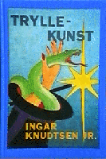

Tryllekunst
Bok og Magasinforlaget 1987
Innbundet, 123 s.
ISBN 82-90387-156
Baksidetekst
En ny og helt spesiell novellesamling av Ingar Knudtsen.
“Romfartøyet fra Jorda skulle bare gjøre en sving omkring Mars, fotografere og kartlegge. Men en eksplosjon i en drivstofftank sendte skipet virvlende ned mot planetoverflaten.
Sammenstøtet var så kraftig at biter av romfartøyet spredte seg i en kilometers omkrets… Men utrolig nok var det likevel noen som overlevde sammenstøtet. Den første ufrivillige kolonist. Hun var alene, ingen tvil om det. Strandet i et fiendtlig miljø. Hvorledes hun hadde overlevd lå over hennes fatteevne. At hun fremdeles levde var enda mer fantastisk. Ingen ville komme henne til unnsetning. Ensom. Kjempende for livet.
Det var bare en ting hun kunne gjøre, et eneste håp…
Fortsettelsen vil du finne svært overraskende, som med de andre historiene i Tryllekunst.
Forfatterens kommentar
Elsket og hatet? Reaksjonene på denne boka var uventet sterke. OK. Den var et eksperiment. Rundt 70 noveller samlet på 121 sider! Med innhold som spenner fra det banale til det (hrm) briljante. En pose litterære peanøtter, var såvidt jeg husker Tron Øgrims kommentar.
Tittelnovella er forøvrig antakelig min mest antologiserte, og er bl.a. gjengitt i bokklubbens “Stella Polaris”-antologi.
Boka kurerte meg vel for å skrive flere poengnoveller. Jeg har tydeligvis gjort mitt der. Samlet på denne overveldende måten gir de i grunnen klar beskjed om det. Step aside, Fredric Brown.
Jeg vil likevel forsvare med nebb og klør at den ble utgitt. At den provoserte noen og gledet andre er i grunnen et godt tegn i så måte.
Samtidig avslutter denne boka også en epoke i forfatterskapet. Samme året som Tryllekunst kom ut, kom nemlig også Våpensøstrene. Og se det ble en ganske annen skål…